<div class="container">
  <mat-toolbar color="primary" class="toolbar">
    <a mat-button routerLink="/">
      <div class="logo">
        
        
        <span>{{ "canvas" | uppercase }}</span>
      </div>
    </a>
    <span class="spacer"></span>
    <!-- <button mat-icon-button>
      <mat-icon>light_mode</mat-icon>
    </button>
    <button mat-icon-button>
      <mat-icon>dark_mode</mat-icon>
    </button> -->
    <a
      mat-icon-button
      href="https://github.com/teddingdev/ngx-uvcanvas"
      target="_blank"
    >
      <mat-icon svgIcon="icon_github"></mat-icon>
    </a>
  </mat-toolbar>
</div>
